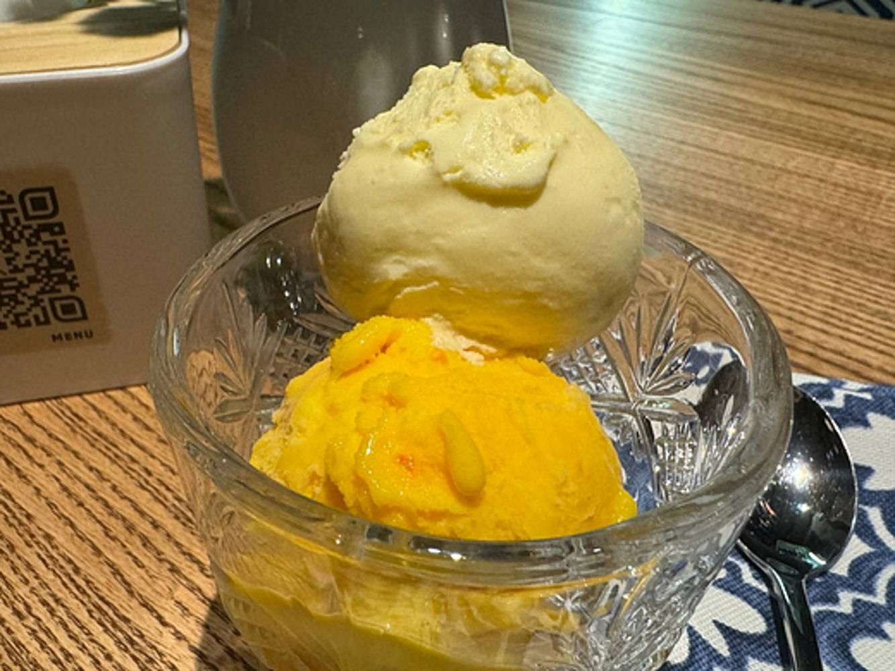
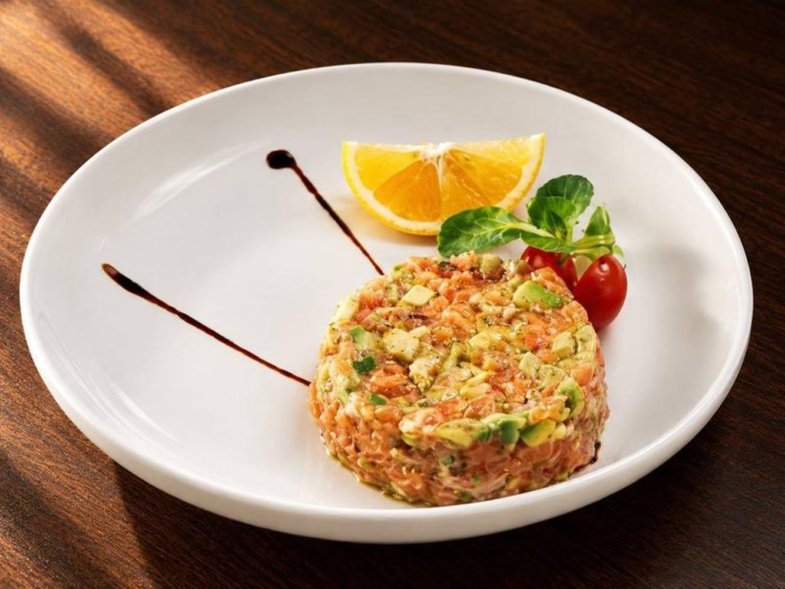
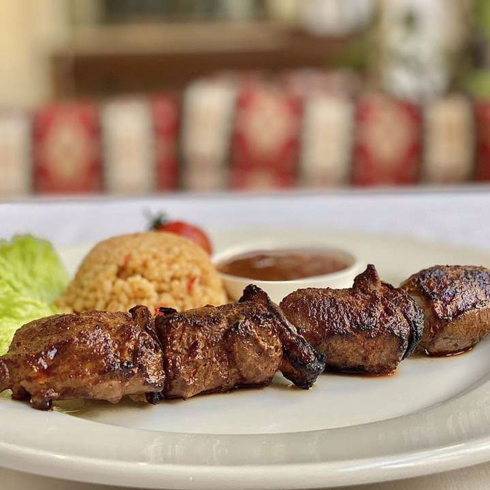
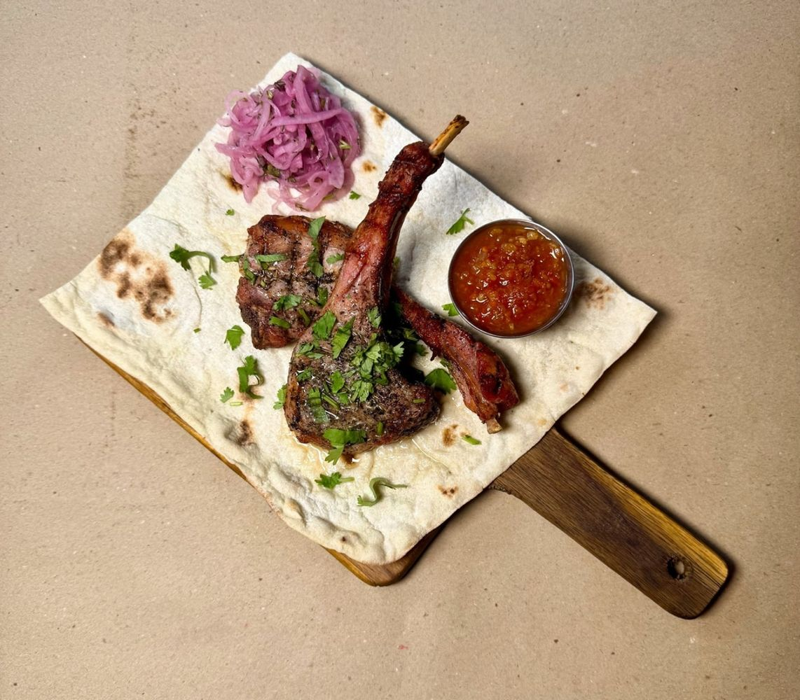
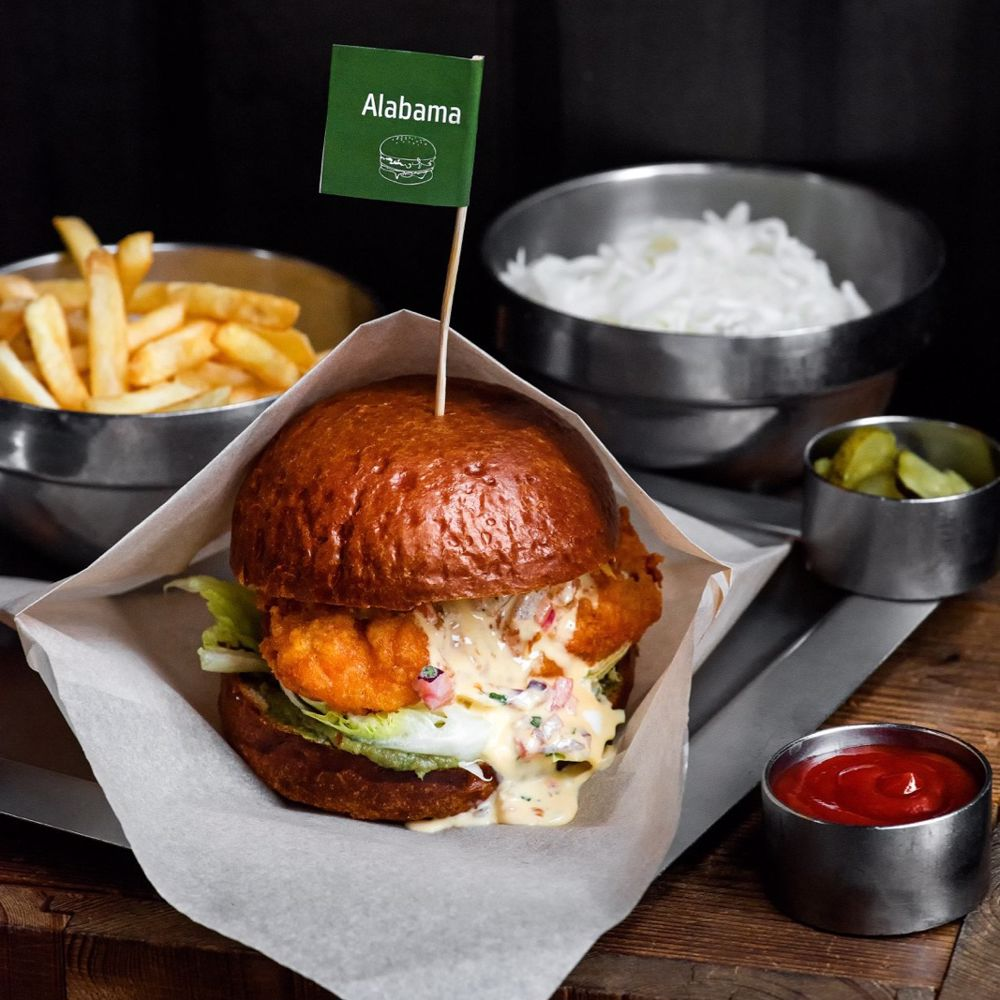

Підсумки року 🏆
Які страви Київ шукав у Google — і знаходив на TipMyMenu
топ-5 сторінок страв за показами в Google, 1.01–23.11.2026
Підсумки року 🏆
топ-5 сторінок страв за показами в Google, 1.01–23.11.2026

зазвичай у Києві
на фото: Сыто-Пьяно, 65 ₴

зазвичай у Києві
на фото: Antwerpen, тартар з лосося, 495 ₴ · ⭐ 5,0

зазвичай у Києві
на фото: Musafir, шашлик з баранини, 420 ₴ · ⭐ 5,0

зазвичай у Києві
на фото: Радіо Тбілісі, каре телятини, 315 ₴ · ⭐ 5,0

зазвичай у Києві
на фото: The Burger, «Алабама», 190 ₴ · ⭐ 4,5
ціни з меню на TipMyMenu, 26.11.2026
ДЛЯ КАФЕ Й РЕСТОРАНІВ
Поки в залі тихіше, оновіть меню онлайн за 1 вечір →
Меню вже є в Expirenza, ChoiceQR, RestoApp чи ps.me? Вставте посилання в кабінеті — бот візьме страви, фото й ціни. Або додайте страви вручну.
Січень — найкращий момент прибрати зі старого меню те, чого вже немає.
І наліпку «Ми на TipMyMenu» на вітрину — обидві в кабінеті.
Профіль у Google → «Редагувати профіль» → «Меню» → «Посилання на меню».
А щомісяця — звіт: покази в Google, переходи, скани QR, оцінки страв.
tipmymenu.com/uk/restaurants/aboutУ січні — нові розбори страв і цін. Що розібрати першим? Пишіть у коментарях 👇